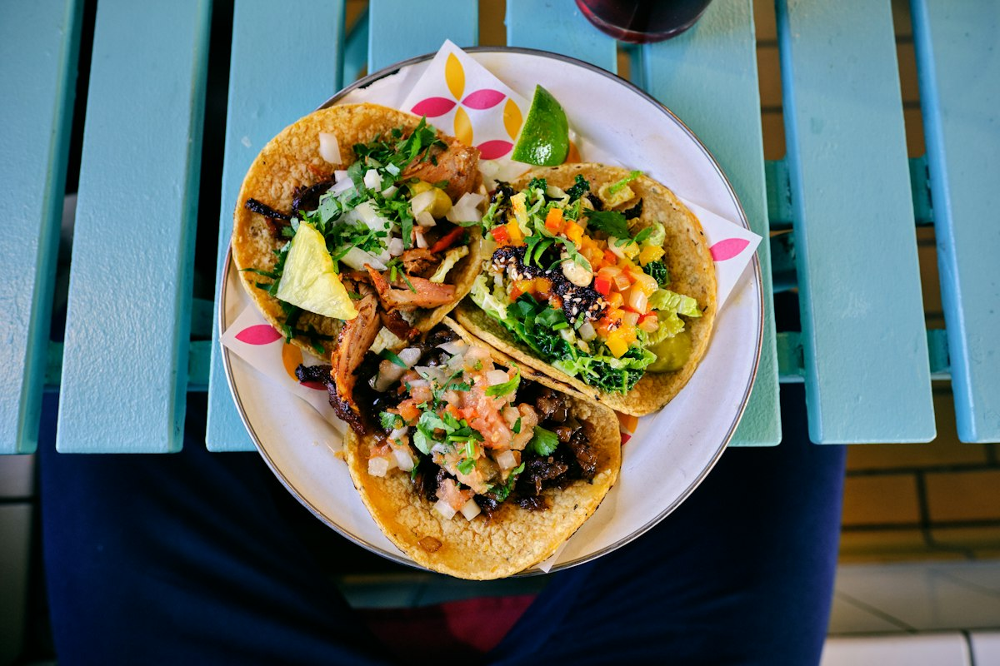
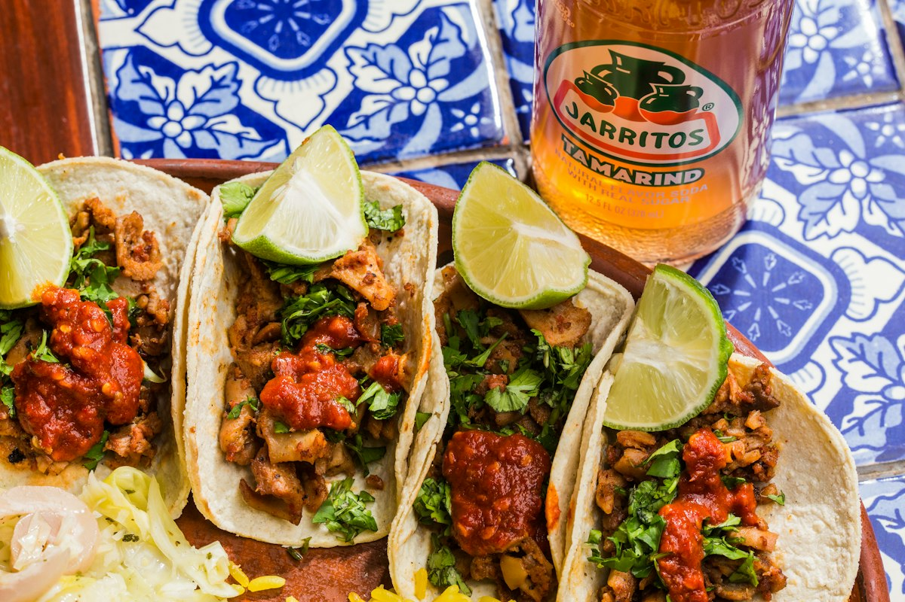
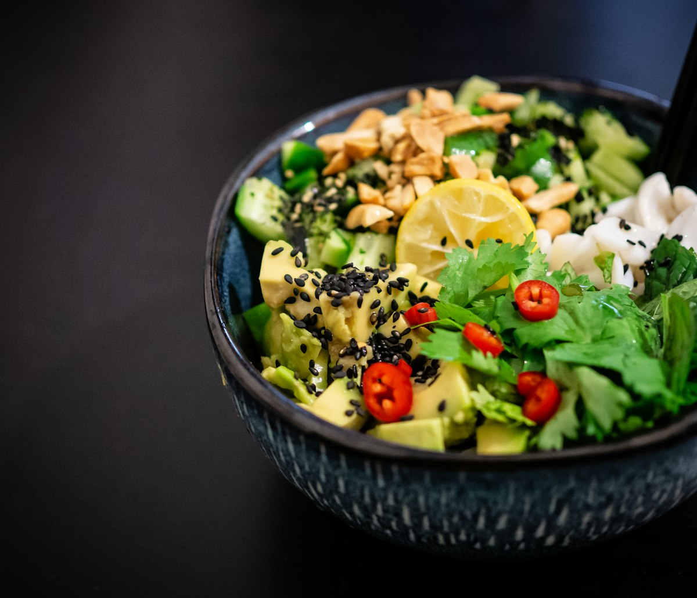
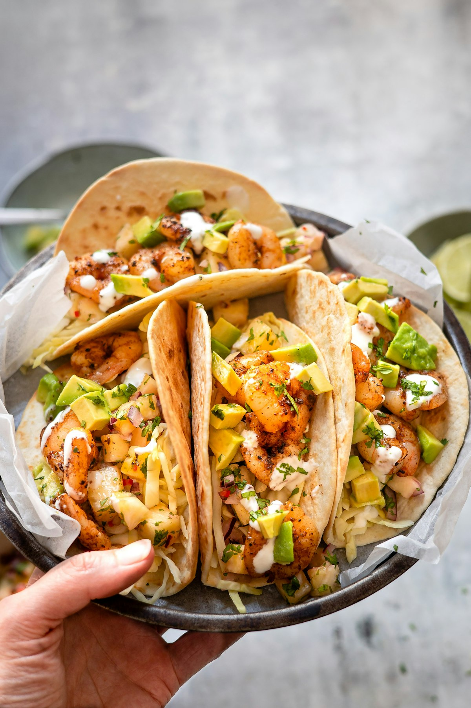

Auténticas Carnitas de Cazo & Tortillas a Mano
Bienvenido a Fonda Las Tarascas en The Plaza. Honramos la cuna gastronómica de Michoacán con carnitas doradas lentamente en cazo tradicional de cobre, birria de res con consomé concentrado, sopes y huaraches de masa fresca, y aguas frescas del día.

Plato de Carnitas Michoacán
Carne de cerdo jugosa y dorada a fuego lento en cazo de cobre, servida con arroz mexicano, frijoles refritos con manteca, cebolla, cilantro, salsa de molcajete y tortillas recién hechas.
El Sabor Genuino de los Fogones de Michoacán
Reconocida por la UNESCO como patrimonio de la humanidad, la cocina purépecha y de fonda mexicana se prepara con paciencia, técnica y maíz auténtico.

Quesabirrias con Consomé
Tortillas de maíz doradas en la grasa sazonada de la birria, rellenas de carne de res deshebrada suavemente cocinada en adobo de chiles secos, queso derretido y tazón de consomé caliente.

Sopes, Huaraches & Gorditas
Masa pellizcada a mano en los bordes y cocida al punto en comal caliente. Con base de frijoles refritos, tu carne preferida, lechuga crujiente, queso fresco desmoronado y crema ácida.

Pozole Tradicional & Menudo
Caldo de maíz pozolero tierno con cerdo sazonado con chiles guajillo y ancho, acompañado de orégano, repollo fino, rábanos, limón y tostadas con crema.
La Calidez de Nuestro Comedor en The Plaza
En México, una fonda es sinónimo de comida honesta, porciones generosas y trato como en casa. En Fonda Las Tarascas preparamos cada guisado fresco todas las mañanas.
Acompaña tu comida con una refrescante agua de horchata con canela o flor de jamaica natural, y termina con unos churros doraditos con cajeta tradicional.

Paquete Taquiza Tarasca
3 carnes a elegir (Carnitas de cazo, Pastor con piña, Asada, Birria de res), tortillas de maíz calientes, arroz mexicano, frijoles charros o refritos, barra de salsas verde y roja, limones, cilantro y cebolla picada.